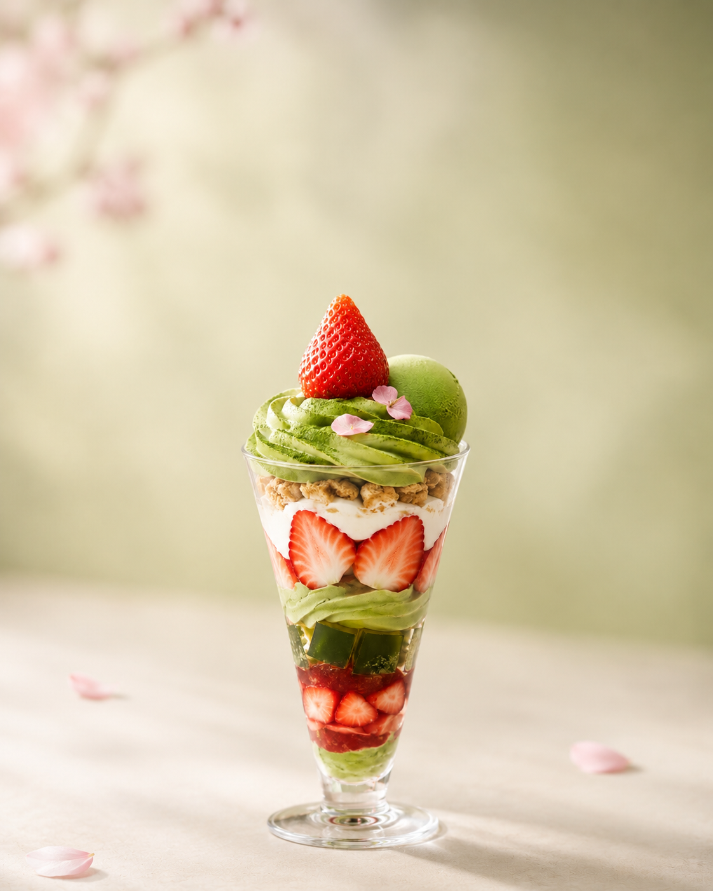
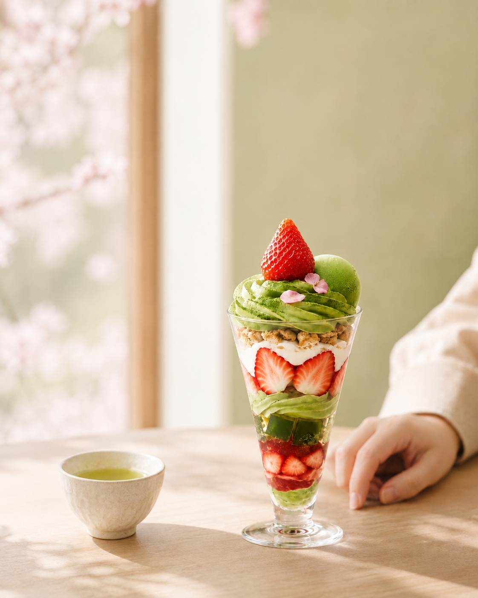
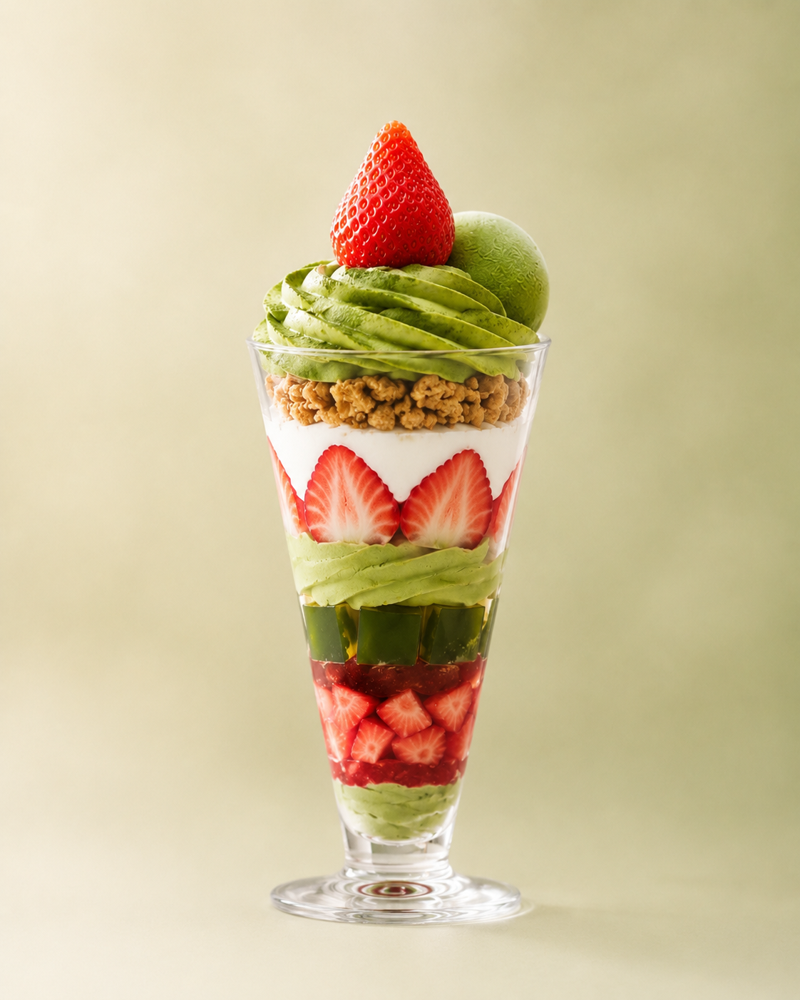
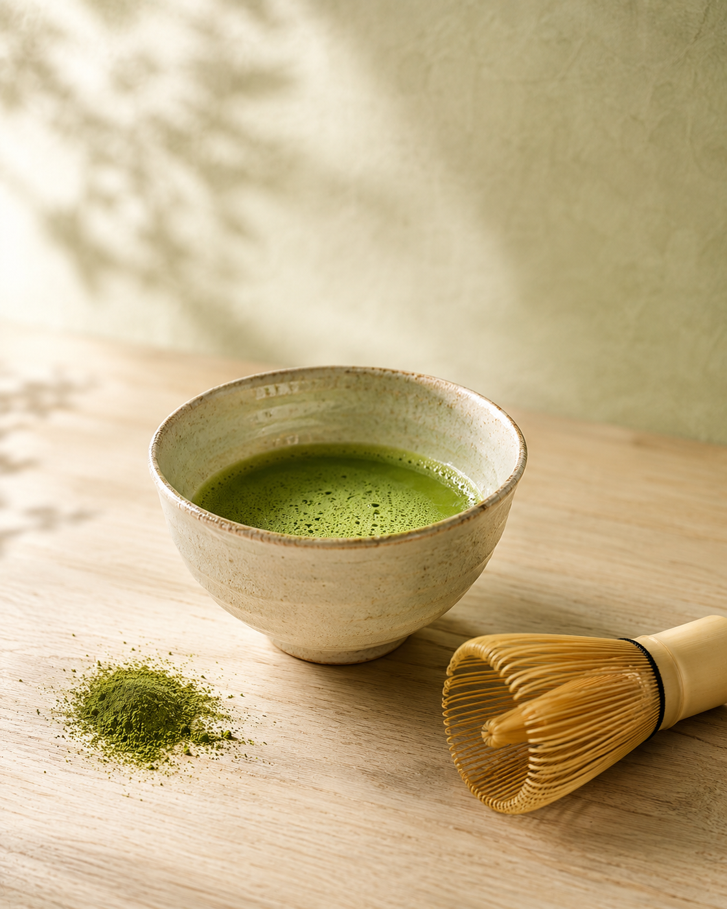
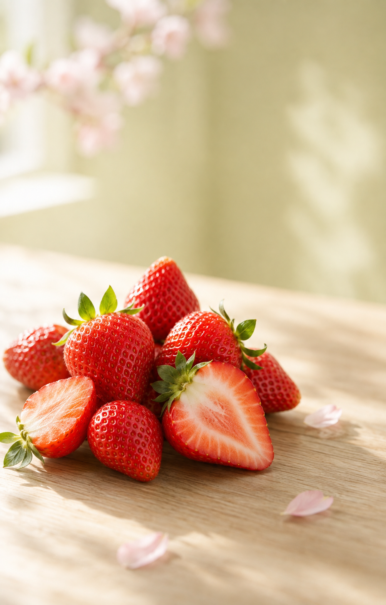
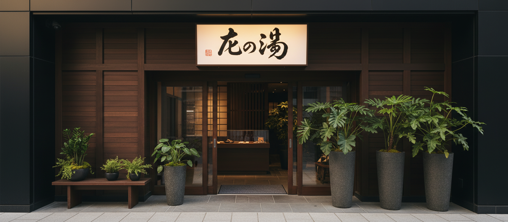
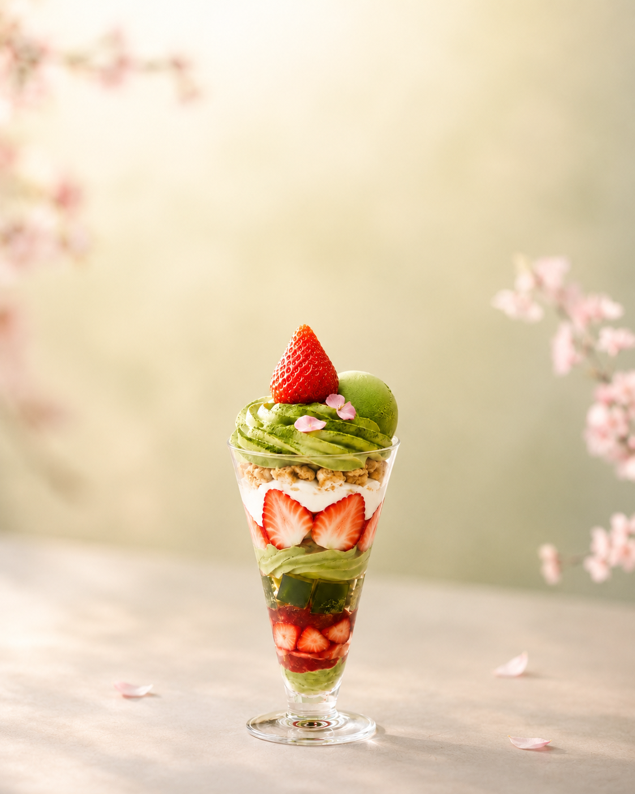

宇治抹茶
ほろ苦さ・香り・深み。ひと口目から豊かな余韻が広がります。
MATCHA BLOOM
春限定
宇治抹茶のほろ苦さと、苺のみずみずしい甘酸っぱさ。
春限定の特別な一皿をお楽しみください。
01Spring Moment

春のやわらかな光の中で、抹茶と苺をゆっくり味わうご褒美時間。ひと息つきたい午後に、季節の一皿をお楽しみください。
02Flavor Notes
ほろ苦さ・香り・深み。ひと口目から豊かな余韻が広がります。
甘酸っぱさ・みずみずしさ。抹茶の余韻を春らしく引き立てます。
まろやかさで、抹茶と苺の味わいをひとつにまとめます。
03The Layers

04Premium Ingredients

抹茶ならではの深い香りと心地よいほろ苦さが、苺の甘酸っぱさを引き立てます。

鮮やかな色とみずみずしい甘酸っぱさ。抹茶と重なることで、春らしい華やかな味わいが広がります。
05The Exclusivity
抹茶のほろ苦さと苺の甘酸っぱさ。互いの魅力を引き立てる組み合わせです。
季節限定だからこそ楽しめる、いつものカフェ時間を少し特別にするご褒美スイーツ。
抹茶の緑と苺の赤を重ねた、思わず写真に残したくなる春らしい佇まいです。
06Details
07How to Reserve

提供店舗・日時の詳細は予約ページでご確認ください。
08Reviews & Social
制作サンプルのため、実際の口コミ情報は掲載していません。
09FAQ
制作サンプルのため価格は未設定です。詳細は予約ページをご確認ください。
予約方法や予約の要否は未確定です。正式な提供条件をご確認ください。
数量条件は未確定です。在庫・提供数などの正式情報をご確認ください。
原材料・アレルギー情報は正式な商品情報をご確認ください。
提供店舗は未確定です。詳細は予約ページで正式な店舗情報をご確認ください。
宇治抹茶のほろ苦さと、苺のみずみずしい甘酸っぱさ。
春限定の一皿を、特別な時間とともにお楽しみください。
